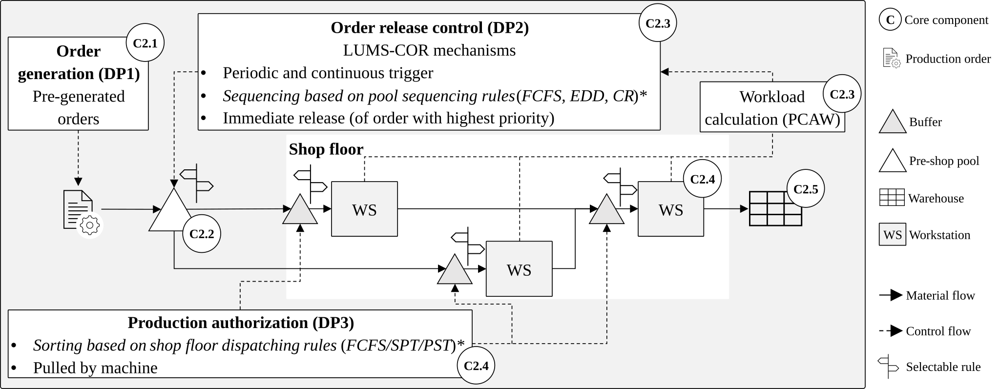

Below is an overview of the research fields for which we have published repositories. Click on a project to access its Github repository. A full overview of all our research activities can be found on our website .
Design for Disassembly, Disassembly Modeling, Disassembly Simulation, Object-centric Process Mining

10.1109/IEEM63636.2025.11357707
Material Flow Control Disassembly Workload Control Discrete Event Simulation
Released: 2025
Ramp-up Simulation
Reverse Engineering, Friction Stir Welding
Sustainability Assessment